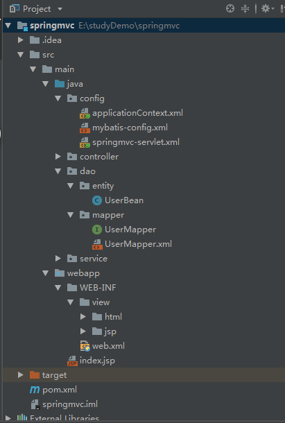

在以上搭建的基础上，进行mybatis的使用搭建，此时目录结构如图，增加了dao层

1.1 pom依赖添加：要添加的驱动分别为mybatis的jar包和mysql的驱动包，为了方便使用@Data注解，还引入了lombook的jar包依赖
<dependency>
<groupId>org.mybatis</groupId>
<artifactId>mybatis</artifactId>
<version>3.1.1</version>
</dependency>
<dependency>
<groupId>mysql</groupId>
<artifactId>mysql-connector-java</artifactId>
<version>6.0.6</version>
</dependency>
<dependency>
<groupId>org.projectlombok</groupId>
<artifactId>lombok</artifactId>
<version>1.16.18</version>
<scope>provided</scope>
</dependency>
1.2 mybatis-config.xml配置：
<?xml version="1.0" encoding="UTF-8" ?>
<configuration>
<settings>
<setting name="mapUnderscoreToCamelCase" value="true"/>
</settings>
<environments default="environment">
<environment id="environment">
<transactionManager type="JDBC" />
<dataSource type="POOLED">
<property name="driver" value="com.mysql.jdbc.Driver" />
<property name="url"
<property name="username" value="root" />
<property name="password" value="123456" />
</dataSource>
</environment>
</environments>
<mappers>
<mapper resource="dao/mapper/UserMapper.xml"/>
</mappers>
</configuration>
2.数据库映射表准备：
package dao.entity;
import lombok.Data;
import java.io.Serializable;
@Data
public class UserBean implements Serializable {
private int id;
private String userName;
private String passWord;
private int status;
}
3.1 IService接口
package service;
import dao.entity.UserBean;
import java.io.IOException;
import java.util.List;
public interface IService {
/**
* 查询用户表list集合
*/
List<UserBean> query() throws IOException;
}
3.2 IService接口实现类ServiceImp
package service.impl;
import dao.entity.UserBean;
import dao.mapper.UserMapper;
import org.apache.ibatis.io.Resources;
import org.apache.ibatis.session.SqlSession;
import org.apache.ibatis.session.SqlSessionFactory;
import org.apache.ibatis.session.SqlSessionFactoryBuilder;
import service.IService;
import java.io.IOException;
import java.io.InputStream;
import java.util.List;
@org.springframework.stereotype.Service
public class ServiceImpl implements IService {
@Override
public List<UserBean> query() throws IOException {
String resource = "config/mybatis-config.xml";
InputStream inputStream = Resources.getResourceAsStream(resource);
SqlSessionFactory sqlSessionFactory = new SqlSessionFactoryBuilder().build(inputStream);
SqlSession session = sqlSessionFactory.openSession();
UserMapper userMapper = session.getMapper(UserMapper.class);
List<UserBean> userBean = userMapper.selectUserList();
for(UserBean u:userBean) {
System.out.println(u.toString());
}
return userBean;
}
}
4.UserMapper
package dao.mapper;
import dao.entity.UserBean;
import org.apache.ibatis.annotations.Select;
import java.util.List;
public interface UserMapper {
List<UserBean> selectUserList();
//另一种写法，本例未用到
@Select("SELECT * FROM User WHERE id = #{id}")
UserBean autoSelectUserList(int id);
}
5.UserMapper.xml 写和UserMapper中方法名对应的sql语句配置文件
<?xml version="1.0" encoding="UTF-8" ?>
<!DOCTYPE mapper
<mapper namespace="dao.mapper.UserMapper">
<select id="selectUserList" resultType="dao.entity.UserBean">
select * from User;
</select>
</mapper>